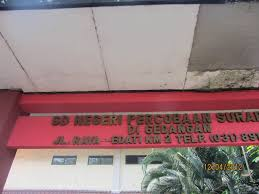
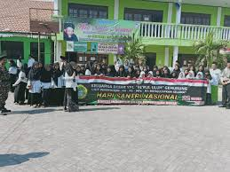

TentangAku.Com
Sekolahku

Sekolah Menengah Atas Negeri 2 Buduran adalah sekolah sekolahku Sekarang
Sekolah Menengah Pertama Negeri 1 Sedati adalah sekolahku di waktu SMP
Sekolah Dasar Negeri Percobaan Surabaya adalah sekolahku di waktu SD
Taman Kanak Kanak Bi'Rul Ulum adalah sekolahku di waktu TK